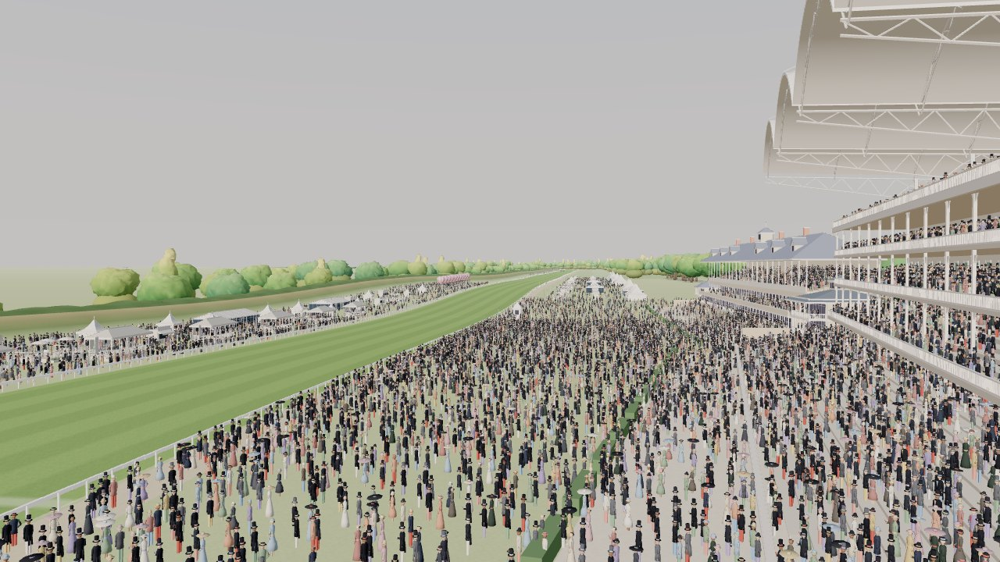

Pick a race to watch it in 3D: the runners over the racecard view from the stands, the off, the TV director's cameras down the course, through the Dip and up to the line, then the replay.

Cameras. The TV director cuts between the start camera, the tracking car, the drone, the head-on long lens and the stand camera. The bar at the bottom of the race view lets you pick one.
The Dip. The ground falls about 3 m into the Dip a furlong out and climbs to the line. The horses run it, and the race engine counts it.
Running slowly? Choose Medium or Low under Quality in the race view's bar. Auto steps down by itself.
Also: the July Course.